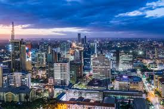
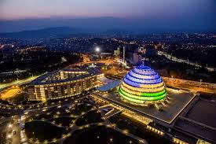
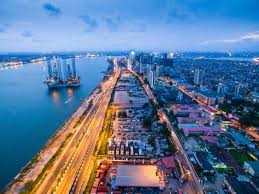

Famous African Cities

Nairobi
Nairobi is the capital city of kenya and one of the growing cities in Africa.It is known as the "Green City in the Sun"
because of it beautiful enviroment and parks.Nairobi is a major center for business,technology and tourism.
- Country:Kenya
- Nickname:Green City in the sun
- Population:Over 4 Million People
- Main Activity:Business and Technology
- Famous Place:Nairobi National Park

Cairo
Cairo is the capital city of Egypt and one of the largest cities in Africa.It is famous for the Pyramids,
River Nile, and ancient history.
- Country:Egypt
- Main Attraction:The Pyramids of Gaza
- Population:Over 10 Million people
- Main Language:Arabic
- Popular Acitivity:Tourism

Kigali
Kigali is the capital city of rwanda.It is known as one of the most cleanest and organized cities in Africa
- Country:Rwanda
- Main Activity:Business and Tourism
- Known For:Clean Enviromenty
- Population:Over 1 Million People
- Main Language:Kinyarwanda

Lagos
Logas is a major city in Nigeria and is known for business,entertainment and busy urban life
- Country:Nigeria
- Famous For:Music and Business
- Population:Over 15 million people
- Main Language:English
- Main Activity:Trade and Entertainment